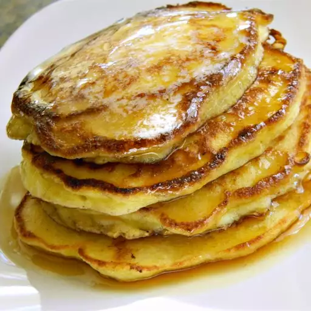

These are an old favorite of mine. I use small-curd, low-fat cottage cheese. They come out thin and delicate, somewhere between a classic pancake and a crepe. A nice addition to a reduced-carb diet.
- 1 cup cottage cheese
- 3 eggs
- ¼ cup all-purpose flour
- 2 tablespoons melted butter
- ¼ teaspoon salt
- 1 teaspoon butter, or as needed
- ¼ cup blueberries, or to taste (Optional)
- Strain cottage cheese in a sieve fitted over a bowl, pressing down occasionally, until cottage cheese has dried out, about 1 hour.
- Beat eggs in a medium bowl; add cottage cheese, flour, melted butter, and salt. Mix until just blended.
- Heat butter in a frying pan over medium-high heat; drop large spoonfuls of batter into the melted butter. Sprinkle blueberries into batter. Cook until lightly browned, 2 to 3 minutes per side.